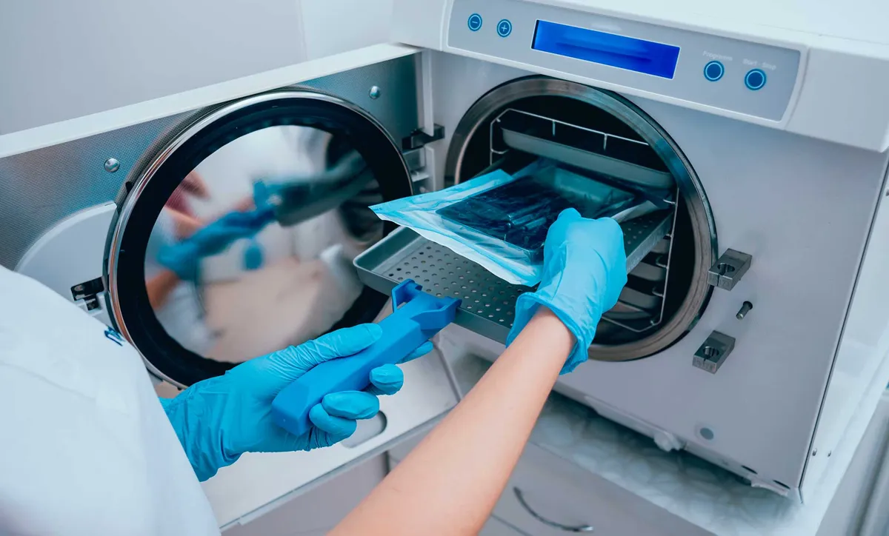

O Novo Marco Regulatório do Processamento de Produtos para Saúde em Odontologia: Análise Técnica da RDC 1002/2025 e a Evolução dos Sistemas de Rastreabilidade

A biossegurança em serviços de odontologia no Brasil atravessa um momento de transformação estrutural sem precedentes neste início de 2026. A consolidação normativa, que anteriormente se fragmentava entre resoluções gerais de serviços de saúde e diretrizes específicas de conselhos de classe, alcançou um novo patamar de maturidade técnica e jurídica com a publicação da Resolução da Diretoria Colegiada (RDC) nº 1.002, de 15 de dezembro de 2025. Este documento estabelece, pela primeira vez de forma unificada e nacional, as Boas Práticas de Funcionamento para os serviços que prestam assistência odontológica, preenchendo uma lacuna histórica de regulamentação específica e harmonizando exigências que impactam diretamente a operação cotidiana do Centro de Material e Esterilização (CME) odontológico. A transição entre o arcabouço genérico da RDC 15/2012 e a nova RDC 1002/2025 exige dos especialistas uma análise minuciosa, especialmente no que tange à validade do preenchimento manual de etiquetas de rastreabilidade, tema central da presente investigação técnica.
A Gênese da Mudança Normativa: Do Caráter Genérico da RDC 15/2012 à Especificidade da RDC 1002/2025Historicamente, o processamento de produtos para saúde em odontologia era regido predominantemente pela RDC 15/2012, que permanece como a norma de referência, a denominada "norma mãe", para todos os serviços de saúde que realizam o reprocessamento de materiais no território brasileiro. A RDC 15/2012 foi um marco divisório para as CMEs hospitalares, estabelecendo requisitos de fluxo, monitoramento e qualificação de equipamentos que elevaram o padrão de segurança do paciente cirúrgico. Contudo, a aplicação integral desta norma em consultórios odontológicos de pequeno porte frequentemente gerava ambiguidades interpretativas e dificuldades de implementação, uma vez que o texto original foi concebido com foco em ambientes hospitalares de alta complexidade e em empresas processadoras terceirizadas.
A análise das imagens fornecidas revela a base dessa estrutura normativa anterior: o Artigo 85 da RDC 15/2012, que determinava que o rótulo de identificação da embalagem esterilizada contivesse, no mínimo, o nome do produto, o número do lote, a data de esterilização, a data limite de uso, o método de esterilização e o nome do responsável pelo preparo. Este modelo, embora robusto, permitia uma flexibilidade que, em 2026, é vista como um risco potencial em cenários de alta rotatividade de pacientes e instrumentais. A chegada da RDC 1002/2025 em dezembro de 2025 não revoga a RDC 15/2012; pelo contrário, ela a reforça e a complementa, adaptando seus princípios fundamentais à realidade específica da clínica odontológica, detalhando protocolos que antes eram aplicados de forma analógica ou baseados apenas em recomendações bibliográficas.
A nova resolução possui uma abrangência extensa, aplicando-se a todos os serviços que prestam assistência odontológica em saúde humana, sejam eles de personalidade física ou jurídica, públicos ou privados, filantrópicos, civis ou militares. Isso inclui desde o consultório individual de um cirurgião-dentista autônomo até grandes complexos de ensino e pesquisa, passando por laboratórios de prótese dentária e unidades de atendimento móvel ou portátil em espaços escolares. O vigor da norma iniciou-se imediatamente após sua publicação no Diário Oficial da União em 16 de dezembro de 2025, embora tenha estabelecido um cronograma de adequação diferenciado para estabelecimentos preexistentes.
Característica Regulatória
RDC 15/2012 (Status Anterior)
RDC 1002/2025 (Marco Atual - 2026)
Foco de Atuação
Processamento geral de produtos para saúde
Boas Práticas específicas para Odontologia
Público-Alvo
CMEs de qualquer serviço de saúde
Consultórios, clínicas e laboratórios de prótese
Rastreabilidade
Exigência genérica de registros
Detalhamento rigoroso de itens e registros (Art. 81)
Validade de Esterilidade
Definida pelo RT (estudos de prateleira)
Fixada em 6 meses na ausência de validação (Art. 82)
Uso de Estufas
Proibido para esterilização
Proibição reiterada com ênfase na odontologia
Documentação
Exige POPs e manuais
Exige a Série de Documentos de Boas Práticas (SDBPF)
Análise Crítica da Rastreabilidade e do Artigo 81 da RDC 1002/2025
A rastreabilidade é definida tecnicamente como a capacidade de recuperar o histórico, a aplicação ou a localização de um item por meio de registros documentados de forma seriada. No contexto específico de um CME odontológico em 2026, essa capacidade deve ser absoluta: cada instrumento que entra em contato com tecidos estéreis ou mucosas de um paciente deve ter seu ciclo de esterilização perfeitamente rastreável até o ciclo original na autoclave e o operador que o preparou. O Artigo 81 da nova RDC 1002/2025 é o sucessor direto do Artigo 85 da RDC 15/2012 para o setor odontológico, especificando os requisitos mínimos que devem constar obrigatoriamente na etiqueta de identificação dos pacotes submetidos ao processo de esterilização.
De acordo com o texto normativo atualizado, a etiqueta de identificação deve ser capaz de se manter legível e afixada nas embalagens durante todas as fases de esterilização, armazenamento e até o exato momento do uso clínico. Os itens que devem constar na etiqueta, conforme o Artigo 81, são:
Data da esterilização: O marco temporal que inicia a contagem do ciclo de vida estéril do pacote.
Nome do responsável pelo preparo: Identificação clara do operador que realizou a inspeção, limpeza e acondicionamento, podendo ser por nome, iniciais ou código, desde que rastreável internamente.
Lote da carga de esterilização: Um identificador alfanumérico determinado pelo próprio serviço para controle interno dos pacotes que foram submetidos simultaneamente ao mesmo processo físico na autoclave.
Identificação dos Dispositivos Médicos (DM): Exigência específica para casos onde a embalagem não é transparente (como em papel crepado ou SMS), impedindo a visualização direta do conteúdo pelo profissional.
A Questão da Escrita Manual em Janeiro de 2026
A questão central levantada pela comunidade odontológica no início deste ano diz respeito à validade da escrita manual nessas etiquetas, conforme exemplificado na imagem fornecida pelo usuário. De acordo com a análise técnica dos requisitos da RDC 1002/2025, o preenchimento manual de etiquetas ainda é legalmente válido, mas sua aceitação pela Vigilância Sanitária está condicionada a critérios de performance muito mais rigorosos do que no passado.
A norma exige que a etiqueta permaneça "legível". Na prática de inspeção de 2026, isso significa que a caligrafia deve ser perfeitamente compreensível por terceiros, sem rasuras ou ambiguidades. Mais criticamente, a tinta utilizada deve possuir propriedades químicas que resistam ao processo de autoclavagem ($121^{\circ}C$ a $134^{\circ}C$) sem sofrer desbotamento, borrões ou migração para o interior da embalagem. O uso de canetas hidrográficas comuns ou canetas esferográficas de baixa qualidade é frequentemente apontado como uma falha de biossegurança, pois a degradação da tinta compromete a rastreabilidade exigida pelo Artigo 81.
Embora não exista uma proibição explícita da escrita manual no texto da RDC 1002/2025, a tendência normativa e a pressão por segurança do paciente (PSP) estão acelerando a obsolescência dessa prática. O processamento de instrumentais sem uma rastreabilidade mecanizada ou digital é comparado, na literatura técnica contemporânea, ao envio de uma mala em um aeroporto internacional sem etiqueta de código de barras: se ocorrer um problema no trajeto, a identificação da falha torna-se um processo moroso e sujeito a erros judiciais. A recomendação técnica para 2026 é que, mesmo que a escrita manual seja mantida, ela seja restrita a informações complementares, enquanto os dados críticos de lote e data sejam preferencialmente gerados por sistemas de etiquetagem que garantam a padronização visual.
O Impacto Revolucionário do Artigo 82: A Regra de 6 Meses para Validade de EsterilizaçãoUm dos pontos mais sensíveis e amplamente discutidos da transição para a RDC 1002/2025 é o Artigo 82, que versa sobre o prazo de validade da esterilidade dos pacotes. Historicamente, sob a égide da RDC 15/2012, o serviço de saúde tinha a responsabilidade (e o ônus) de determinar seu próprio prazo de validade baseado em estudos de "vida de prateleira" (shelf-life), levando em conta a qualidade das embalagens, as condições ambientais de armazenamento e o manuseio. Esta subjetividade criava uma disparidade imensa entre os serviços, com prazos que variavam de 7 dias a 1 ano, muitas vezes sem base científica sólida.
A RDC 1002/2025 inovou ao estabelecer um padrão nacional de segurança: o prazo de validade da esterilidade deve ser estabelecido pelo serviço com base em validação científica; contudo, na ausência de tais estudos próprios ou consultorias especializadas que comprovem um prazo maior, fica estabelecido por força de lei o prazo máximo de 6 (seis) meses, contados a partir da data do processamento.
Esta determinação normativa simplifica drasticamente a gestão para o clínico em 2026, mas impõe que este prazo de 6 meses seja estritamente condicionado à manutenção da integridade da embalagem. A norma adota o conceito científico de "esterilidade baseada em eventos" (event-related sterility), o que significa que o tempo cronológico é secundário à integridade física do pacote.
Critério de Manutenção (Art. 82)
Implicação Operacional para o CME
Integridade da Embalagem
Proibição de furos, rasgos ou dobras que possam criar microfissuras.
Condição de Umidade
O pacote deve sair seco da autoclave; qualquer sinal de umidade invalida a esterilidade.
Ausência de Sujidade
Armazenamento em locais que impeçam o acúmulo de poeira ou resíduos externos.
Controle de Eventos
Quedas, manuseio excessivo ou compressão em gavetas superlotadas exigem reprocessamento.
Este novo parâmetro exige que a etiqueta (manual ou impressa) reflita claramente o prazo de validade adotado. No modelo de etiqueta manual apresentado na imagem do usuário, a inclusão do campo "Validade" torna-se ainda mais crítica em 2026. Se um fiscal sanitário encontrar um pacote com data de processamento superior a 6 meses sem que o serviço apresente um protocolo científico de validação de tempo superior, o material será considerado contaminado e o serviço poderá sofrer sanções administrativas severas.
A Estrutura Física e o Fluxo Unidirecional: Exigências para 2026
A RDC 1002/2025 não se limita à documentação e rastreabilidade; ela reforça a necessidade de uma infraestrutura que suporte fisicamente o controle de infecção. A sala de esterilização é agora descrita tecnicamente como o "coração da biossegurança" do serviço odontológico e deve obrigatoriamente seguir um fluxo unidirecional rígido para impedir a contaminação cruzada.
O fluxo deve ser planejado para que o material contaminado jamais cruze o caminho do material esterilizado. Isso implica uma divisão, no mínimo funcional, entre as seguintes áreas:
Área de Expurgo (Zona Suja): Onde ocorre o recebimento, a pré-limpeza, a limpeza manual ou automatizada e a desinfecção de alto nível.
Área de Preparo (Zona Limpa): Onde os instrumentais são secos, inspecionados quanto à funcionalidade e integridade, e devidamente acondicionados em suas embalagens. É nesta zona que ocorre o processo de rotulagem e etiquetagem objeto da consulta.
Área de Esterilização: O local reservado para a autoclave, onde os pacotes são submetidos ao ciclo físico e ao monitoramento por indicadores biológicos e químicos.
Área de Armazenamento: Um espaço isolado, limpo e seco, destinado exclusivamente à guarda dos materiais estéreis até seu uso clínico.
A norma destaca a obrigatoriedade de barreiras técnicas na sala de esterilização, especialmente em serviços de maior complexidade, e proíbe terminantemente o uso de métodos obsoletos como estufas de ar quente e o uso de aldeídos para desinfecção de instrumentais semicríticos que suportem processos térmicos. Para o especialista em CME, a organização desta estrutura é o que garante que a etiqueta afixada no pacote realmente represente um item seguro. De nada adianta uma etiqueta perfeita em um pacote que foi manuseado em uma área comum de passagem de pacientes.
Monitoramento da Esterilização: A Base de Dados da Rastreabilidade
A rastreabilidade exigida pelo Artigo 81 da RDC 1002/2025 é alimentada pelos dados gerados pelo monitoramento físico, químico e biológico de cada carga de autoclave. No cenário de 2026, a Vigilância Sanitária exige que o registro do lote na etiqueta do pacote esteja vinculado a uma planilha de controle de carga impecável.
Nível de Monitoramento
Requisito Técnico em 2026
Frequência
Monitoramento Físico
Registro de tempo, temperatura e pressão em cada ciclo.
Todos os ciclos
Indicadores Químicos (Tipo 1)
Fitas ou etiquetas externas para diferenciação visual de processado/não processado.
Todos os pacotes
Indicadores Químicos (Tipo 5 ou 6)
Integradores ou simuladores internos que garantem a penetração do vapor.
Todos os pacotes
Monitoramento Biológico
Uso de esporos de Geobacillus stearothermophilus em pacote teste desafio.
Semanal (mínimo)
O Artigo 89 da nova norma especifica que o monitoramento biológico semanal deve ser realizado no primeiro ciclo de esterilização do dia, utilizando um pacote teste contendo o indicador biológico e um integrador químico tipo 5 ou 6. A falha na execução ou no registro destes testes anula qualquer validade da etiqueta de identificação. Em caso de fiscalização, a primeira ação do inspetor será selecionar um pacote aleatório no estoque, ler o número do lote na etiqueta (mesmo que escrita manualmente) e solicitar o registro correspondente naquele dia e ciclo para verificar se o teste biológico foi realizado e se o resultado foi negativo. Se houver uma quebra nesta cadeia de informações, a rastreabilidade é considerada inexistente.
Classificação por Complexidade e a Gestão de Riscos Odontológicos
Uma das inovações mais pragmáticas da RDC 1002/2025 é a classificação dos serviços de assistência odontológica por níveis de complexidade, o que permite uma regulação proporcional ao risco inerente a cada atividade.
Complexidade A: Engloba a grande maioria dos consultórios odontológicos individuais e clínicas coletivas que realizam procedimentos de baixa e média complexidade sob anestesia local. Para estes, as exigências de infraestrutura de CME são adaptadas à realidade de autoclaves de bancada, mas os requisitos de rastreabilidade (Art. 81) e validade (Art. 82) são imutáveis e de aplicação imediata.
Complexidade B: Abrange os Centros Cirúrgicos Odontológicos (CCO) destinados a procedimentos clínico-cirúrgicos de maior porte em regime não hospitalar. Estes serviços possuem exigências estruturais e de segurança muito mais próximas às de um centro cirúrgico hospitalar, exigindo CMEs robustas, possivelmente com autoclaves de maior volume e sistemas de rastreabilidade preferencialmente automatizados.
Independentemente da categoria, a norma exige que o serviço implemente as Boas Práticas de Gerenciamento de Riscos, o que inclui o monitoramento sistemático de incidentes e eventos adversos. A rastreabilidade por etiquetas torna-se, assim, uma ferramenta de gestão de risco: se um paciente apresentar um quadro de abscesso pós-operatório inexplicado, o serviço deve ser capaz de rastrear todos os instrumentais utilizados naquele paciente para descartar falhas no processamento.
A Série de Documentos de Boas Práticas de Funcionamento (SDBPF)
Para o profissional que atua em CME odontológico em janeiro de 2026, a organização documental tornou-se tão importante quanto o processo de esterilização em si. A RDC 1002/2025 introduziu o conceito da Série de Documentos de Boas Práticas de Funcionamento (SDBPF), um dossiê organizado que deve ser mantido atualizado e à disposição das autoridades sanitárias.
A SDBPF é composta por:
Procedimentos Operacionais Padrão (POPs): Instruções escritas passo a passo para cada rotina, desde o transporte do material contaminado até o armazenamento.
Protocolos Técnicos: Diretrizes específicas para cada tipo de DM (Dispositivo Médico).
Registros Rastreáveis: Onde se inserem as planilhas de monitoramento da autoclave e os registros de lotes que dão suporte às etiquetas dos pacotes.
Plano de Segurança do Paciente (PSP): Um documento que detalha as ações para reduzir riscos de erros e danos ao paciente.
Registros de Treinamento: Evidências formais de que a equipe auxiliar (ASB/TSB) foi capacitada para realizar a rotulagem e o monitoramento de forma correta.
A etiqueta manual, quando utilizada, deve estar descrita no POP de acondicionamento do serviço. O documento deve especificar que tipo de etiqueta será usada, qual caneta é permitida para garantir a legibilidade e quem são os profissionais autorizados a preenchê-la. A ausência de um POP que padronize o preenchimento manual pode levar o fiscal sanitário a considerar a prática como "improviso", o que é expressamente desencorajado pelo espírito da nova RDC.
Vigência, Prazos de Adequação e Sanções em Janeiro de 2026
Para os profissionais que estão analisando sua conformidade neste início de ano, é vital distinguir os prazos de adequação estabelecidos pela RDC 1002/2025. A norma foi publicada em 16 de dezembro de 2025, e sua aplicação segue dois pesos:
Novos Estabelecimentos: Qualquer consultório ou clínica que pretenda iniciar suas atividades, ou estabelecimentos preexistentes que não estivessem regularizados junto à Vigilância Sanitária até a data de publicação da norma, são considerados "novos". Para estes, a exigência de cumprimento integral da RDC 1002/2025 é imediata. Nesses casos, a adoção de etiquetas manuais deve ser feita com cautela extrema, pois a fiscalização inicial para licenciamento será rigorosa quanto aos critérios de rastreabilidade.
Estabelecimentos já Regularizados: Serviços que já possuíam licença sanitária válida em 16 de dezembro de 2025 têm um prazo de 360 dias (contados da publicação) para realizar as adequações necessárias ao cumprimento integral do disposto na nova resolução. Este prazo de quase um ano é destinado principalmente a mudanças estruturais complexas (como reformas físicas para criar fluxos unidirecionais ou barreiras técnicas).
É fundamental notar que, embora o prazo de 360 dias exista para adequações estruturais, as normas de segurança imediata, como o monitoramento biológico e a correta identificação dos lotes (Art. 81), já são exigíveis sob a ótica da segurança do paciente. O descumprimento destas exigências constitui infração sanitária, sujeitando o infrator às penalidades previstas na Lei nº 6.437, de 20 de agosto de 1977, que incluem multas que podem variar significativamente de acordo com a gravidade e o porte do estabelecimento, além da interdição temporária ou definitiva do serviço.
Evolução Tecnológica e o Futuro da Rastreabilidade na OdontologiaA transição observada em 2026 aponta para uma digitalização crescente do CME odontológico. Embora a etiqueta manual ainda tenha seu lugar em consultórios de baixo volume, o mercado brasileiro está se adaptando rapidamente para oferecer soluções que automatizam os requisitos do Artigo 81.
Sistemas de etiquetagem mecânica de duplo contato (etiquetadoras manuais) estão se tornando o padrão-ouro inicial, pois imprimem dados de forma padronizada e permitem que uma parte da etiqueta seja colada no prontuário do paciente, fechando o ciclo de rastreabilidade de forma segura. Paralelamente, etiquetas com códigos de barras ou QR Codes integrados a autoclaves conectadas à internet (IoT) permitem que todos os parâmetros do ciclo sejam salvos na nuvem, eliminando a necessidade de planilhas de papel e garantindo que a informação de lote na etiqueta do pacote seja infalsificável.
Conclusões e Recomendações para o Especialista em CME
Com base na análise técnica exaustiva das normativas vigentes em janeiro de 2026 e nos materiais fornecidos, as seguintes conclusões e recomendações são estabelecidas:
Primeiramente, confirma-se que houve uma mudança normativa crucial na virada de 2025 para 2026. A norma atualizada que rege os serviços odontológicos em todo o território nacional é a RDC nº 1.002, de 15 de dezembro de 2025. Esta resolução consolidou e adaptou os requisitos de boas práticas de funcionamento, incluindo o processamento de materiais, anteriormente baseados na genérica RDC 15/2012.
Em relação ao preenchimento manual de etiquetas de rastreabilidade, conclui-se que ele ainda é válido perante a ANVISA, desde que cumpra integralmente os requisitos de conteúdo mínimo previstos no Artigo 81 da RDC 1002/2025 e os critérios de legibilidade e durabilidade essenciais para a segurança do processo. Contudo, a análise técnica ressalta que a escrita manual é uma prática de alto risco operacional devido à variabilidade da caligrafia humana e à instabilidade térmica de muitas tintas de escrita comum sob as condições da autoclave.
As recomendações estratégicas para o CME odontológico em 2026 são:
Revisão do Layout das Etiquetas: Assegurar que as etiquetas (mesmo manuais) contenham todos os campos obrigatórios do Artigo 81 da nova RDC, especialmente o lote da carga e o nome do responsável.
Adoção do Padrão de 6 Meses: Atualizar todos os registros de validade para o teto de 6 meses, conforme o Artigo 82, salvo se houver validação científica documentada para prazos superiores.
Formalização da SDBPF: Organizar a Série de Documentos de Boas Práticas, garantindo que todos os POPs reflitam a nova realidade normativa e que os registros de monitoramento biológico estejam impecáveis e vinculados aos lotes das etiquetas.
Planejamento para Transição Tecnológica: Aproveitar o prazo de adequação de 360 dias para planejar a migração da escrita manual para sistemas de etiquetagem mecânica ou digital, visando aumentar a segurança jurídica do profissional e a segurança clínica do paciente.
Treinamento de Equipe: Realizar treinamentos imediatos para auxiliares e técnicos de saúde bucal sobre as novas regras da RDC 1002/2025, focando na importância crítica da legibilidade na rastreabilidade e no conceito de esterilidade baseada em eventos.
A odontologia brasileira, ao abraçar o marco regulatório da RDC 1002/2025, alinha-se aos mais altos padrões internacionais de biossegurança. O papel do especialista em CME em 2026 é atuar como o guardião dessa transição, transformando exigências regulatórias em processos fluidos que garantam que cada etiqueta, manual ou digital, seja um selo de confiança para a saúde do paciente.